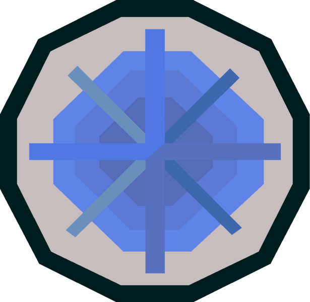
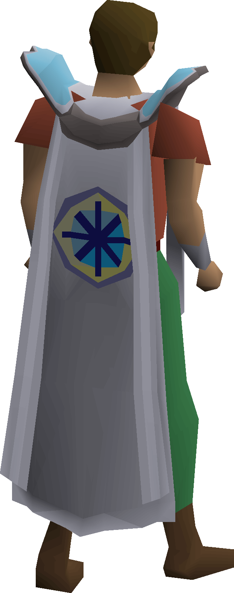
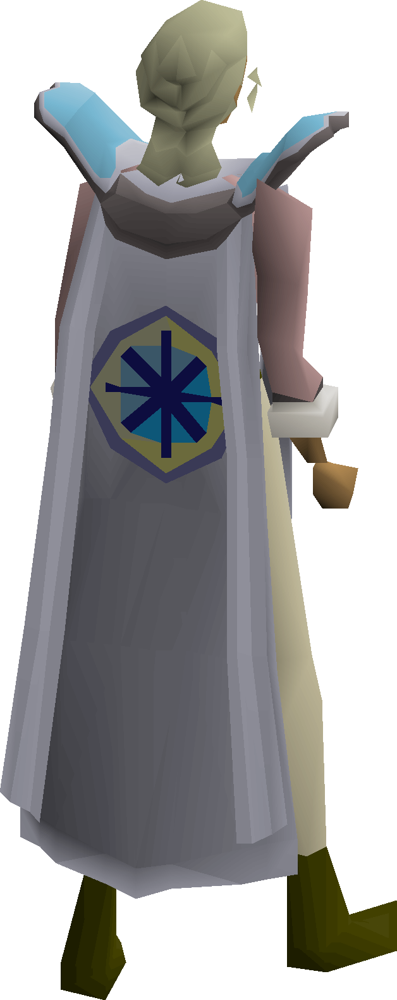

Have you ever wanted to bake a cake? Shear 20 sheep? Maybe help overthrow multiple monarchs and governmental powers? Then questing in Old School Runescape is for you! Click the quest icon to go right to the wiki page and jump in.
Old School Runescape(OSRS) starts you off easy, with simple fetch tasks, getting you acquainted to the areas around Lumbridge. The cook needs ingredients for the Duke's birthday cake, a farmer needs help shearing sheep and spinning wool. Some goblins to the distant north need help picking a new color for their armor. Questing has it all and the ultimate guide for completing them is the Old School Runescape WIKI.
The game has 23 quests for free players, and over 150 more for members. A good progression for beginners is to complete all of the free-to-play(F2P) quests before purchasing membership. The final F2P quests pits you against a fierce dragon named Elvarg.
However, the progression of quests changes if you have membership from the very beginning of your account. You have access to the entire map, and some areas are unlocked by completing short quests, so players may opt for a different route of completing the F2P quests when given the options of membership.
With 178 total quests and more being added with updates, it's hard to narrow down which quests are my favorites. However, there are definitely some memerable quests that most people dread having to do again on a new account.
Some widely disliked quests are:
These quest are all dreaded, for mostly different reasons. They all boil down to be tedious and requiring either a lot of time and attention or monotonus gameplay, and no one enjoys that. One Small Favor has you doing just that, one small favor, but each person you go to asks for a favor, leading you down a chain of "do this for me and I'll give you this for them" until your character returns to the original requester with the requested item(a rather simple request, but requiring the extremely conveluted steps to acquire) all to be asked why you're so upset they asked you for one thing. Rag and Bone Man I & II require you to collect bone pieces from creatures across the continents. They also requires you to "polish" them using an extremely slow and tedious method. There is always more to say about the bad parts of OSRS questing, but overall the quests are fun and enjoyable.
Once you have completed all of the quests, you are able to purchase the Quest Point Cape. Just visit the Wise Old Man in Draynor Village, and bring 99,000 coins. It is a skill cape to represent your accomplishment in completeing every single quest in OSRS. When new quests come out, you lose access to your Quest Point Cape until you have completed the new quests and regained your status as completionist.


It may seem like a daunting task, but in order to fully enjoy and appreciate the game, completing all the quests is paramount. And it looks spiffy to boot!
In 2025, OSRS saw the addition of the game's first brand new skill in over a decade. Sailing was polled along with two other options and ultimately won out, leading to it becoming a fully developed skill. Along with that skill came new quests, and the ability to expand more questlines. At release, Sailing added four new quests to the game:
If you're interested in checking out the sailing skill as a whole, including questing, check out the Sailing page on the wiki.
There are already plans to move forward on many questlines in OSRS. The recently announced "The Blood Moon Rises" quest is the long awaited finale to the Vampyre story line. In the last few years, we saw the addition of Dessert Treasure II, bringing four new end game boss encounters. The developers are always looking for new wats to incorporate older story lines. There are quests that end in "To Be Continued..." that we haven't heard new information on in years. The only way to know which quests will be advanced is to play! OSRS uses polls to decide which updates, including quests, make it into the game.
Photo from: https://oldschool.runescape.wiki/w/File:Quests.png on Jan 28
Photo from: https://oldschool.runescape.wiki/w/Quest_point_cape#/media/File:Quest_point_cape_equipped.png on Feb 3
Photo from: https://oldschool.runescape.wiki/w/Quest_point_cape#/media/File:Quest_point_cape_equipped_female.png on Feb 3